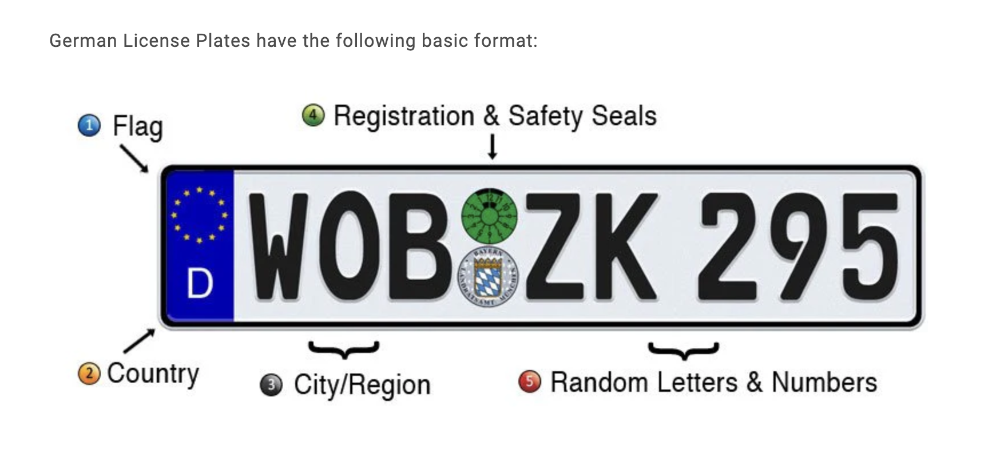

Challenge 1: What a Dump!
Sometimes the most interesting things are found in the most unexpected places...
... but sometimes those places are full of trash.
This dumpster is in an alley somewhere, but where?
Where was the photographer standing when they took this photo?
Use latitude and longitude in decimal format with three decimals (12.345, -67.890).
Looking for language information
In this image I can see a label on the dumpster in English saying "Do Not Park".
I can also see a label saying 8yd, meaning 8yd.
Political information
I can see political signs saying "Lindner kommt", referring to Christian Lindner.
Christian Lindner is a German politician representing the FDP
License plate information
The license plate that is visible displays a blue stripe on the left hand side.
This shows the license plate is European, and the "D" is for Deutschland, i.e. Germany.
The beginning of the license plate is OF. OF represents a city or region.
OF stands for Offenbach am Main, Hesse.
Store information
One store shows the letters "Shishand".
Searching with Google Maps for "Shishand" near Offenbach am Main, Hesse, shows a store in Frankfurt.
The store is called Shishandis.
Google Street view
Looking at Google Street view, there are several common factors with the image provided by bellingcat.
The Shishandis store has the same lettering.
Near the Shishandis store is a yellow EC Cash machine.
There is a tree in front of the Shishandis store.
On the opposite side of the road there are small A-shaped metal barriers.